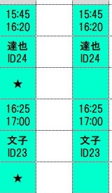
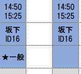
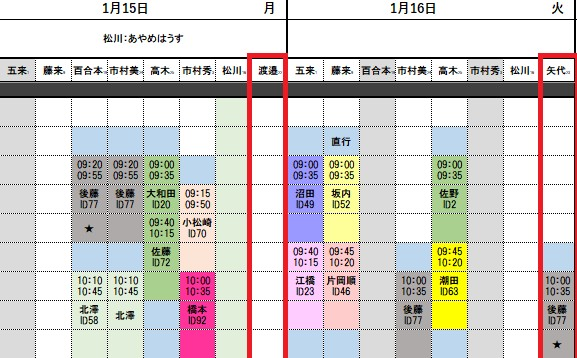
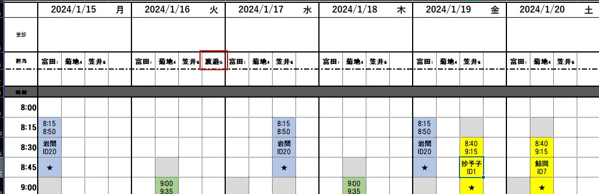

よくある質問と回答
過去にあった質問をまとめています。
Q.フォーマットは全く変更してはいけませんか？
A.既存の項目を変更しなければ自由に変更して大丈夫です。
曜日ごとに列数を変えたり、「担当」や「時刻」といった既存の文字を消さないでいただければ、自由にレイアウト頂いて構いません。
Q.フォーマットの欄外は何も書いてはいけませんか？
A.ご自由に記載して構いません。
Q.マクロ付きEXCELファイルを送付しても大丈夫ですか？
A.問題有りません。
Q.予定表には入れていますが、ケアウイングの予定には入れたくない人がいます。
A.利用者のIDを入れなければシステムでは「予定」として認識しません。IDを入れないで名前だけ予定に組み込んでも問題有りません。
Q.利用者の名前はフルネームで書かないといけませんか？
A.名前はフルネームである必要はありません。システムではIDのみを認識しますので、名前は自由に決めていただけます。
Q.時間や名前を別のセルから参照した作りにしていますが大丈夫ですか？
A.問題有りません。
Q.利用者のID一桁の人はどのように記載しますか？(ID1? or ID01?)
A.ID1と記載してください。
Q.二人対応が連続した場合、★は1つの予定のみにつければいいですか？
A.二人対応の場合は、すべての予定に対して★をつけてください。

Q.二人対応で一般訪問看護指示の方はどのように記載しますか？
A.メインの方に"★一般"と記載してください。

Q.月～土の列数は同じにするとありますが、列数は、従業員の数か、出勤している人の数か、どちらですか？
A.どちらでも問題有りません。ステーションの運用に合わせて記載いただければと思います。
Q.月～土で空欄の列ができても問題有りませんか？
A.問題有りません。
Q.自動登録後、時間変更や日にち変更があった場合は、今まで通りケアウィングを変更しても大丈夫ですか？
A.問題有りません。
Q.他ステーションからのヘルプの場合、どのように名前・IDの入力はどのようにしたらいいでしょうか？
A.まず、ケアウイングにヘルプの方が登録されているか確認してください。登録されていましたら、登録されている場合はそのIDをスケジュールの欄に記載いただければ問題有りません。名前は任意の名前で大丈夫です。
例1：枠を増やさずに、既存の従業員の名前を消し、ヘルプの方(矢代さん)を入れた場合（赤枠部）

例2：枠を増やして、既存の従業員＋ヘルプの従業員を入れる場合。この場合は月～土まで最大出勤人数の列数で揃えてください。
